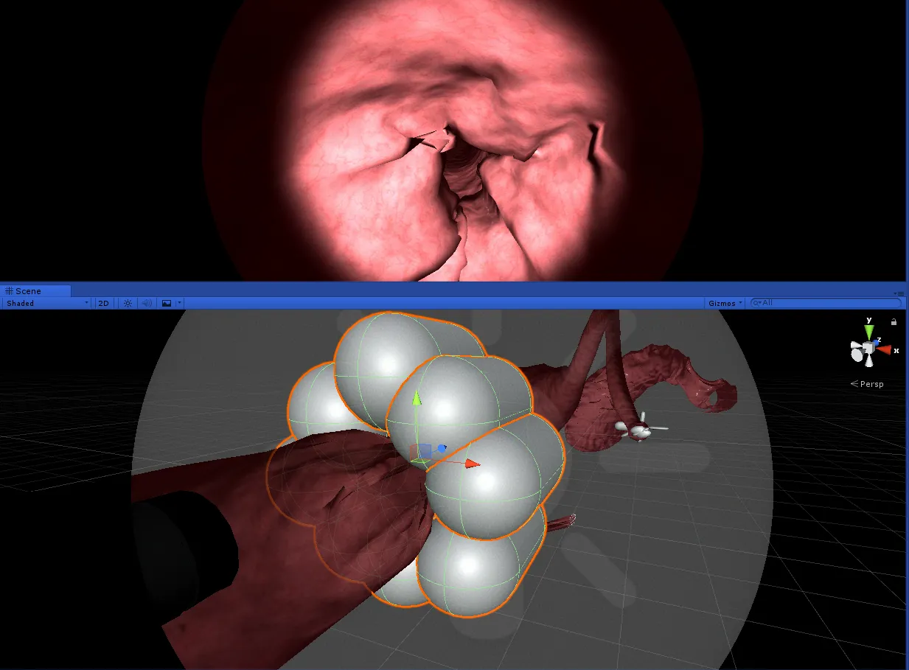
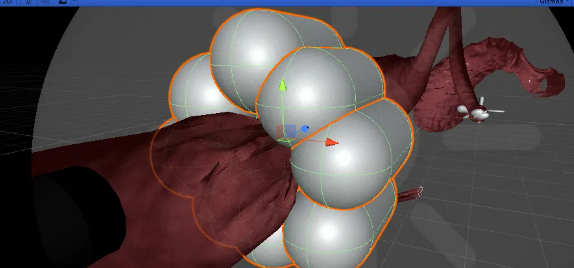
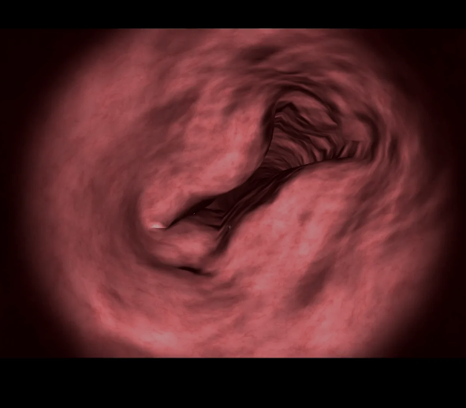
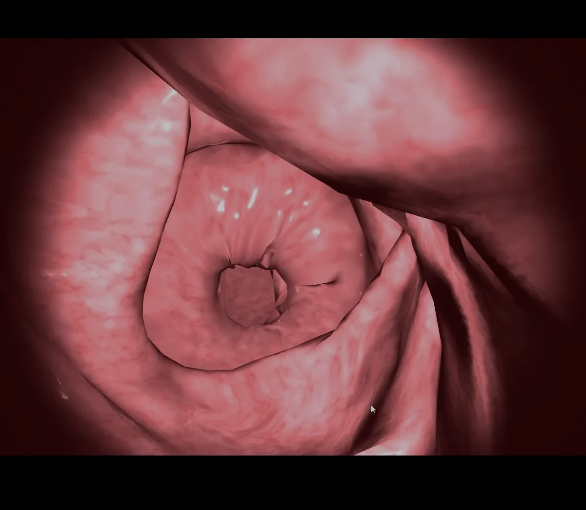

Intellgient Haptronics Solutions - IHS

IHS provides hands-on clinical experience for learners without the patients being present. This project is a Digestive Endoscopy Training SimulatorPCC#UnityNov 2018 - Aug 2019Our collaboration with IHS involved the development of a training simulation for surgeons, where our application utilized real surgical tools to simulate motion, deformation, and fluidity. IHS tasked us with creating digital 3D replicas of the human body for the purpose of training and surgical simulations.My first task was to understand how the human body works. I need to understand how the movements occur for the throat, esophagus and stomach. I watched multiple videos provided by IHS. These videos were the point of view of the endoscope. I can see how the tools come out, how polyps are removed, and how the body moves such as contractions. One of the hardest parts was simulating esophagus contraction. I used capsules and placed them around the esophagus model. Using animation, the cylinder would push in and out the model from the outside of the esophagus.

Other parts of the body had contractions too such as cardia, pylorus. I applied the same logic using spheres for the contractions. The hard part was the duodenum. I decided to use small spheres and attach it to certain points inside the duodenum model. Using animation, the sphere would move in and out to simulate movement. This turned out to be difficult, because too many spheres caused the app to lag. Too little spheres cause the movement to look awkward. Through trial and error, we found the right amount of spheres and found the right points on the duodenum to attach the spheres while avoiding any lagging. The esophagus contraction looked like what was shown in the video examples. Below are some results of what the contractions looked like while we tested in the editor

